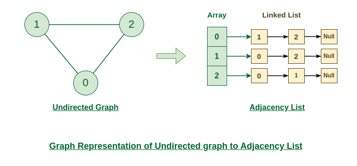

Graph Algorithms
Graph algorithms are methods used to manipulate and analyze graphs, solving various range of problems like finding the shortest path, cycles detection.
Graph and its representations
A Graph is a non-linear data structure consisting of vertices and edges. The vertices are sometimes also referred to as nodes and the edges are lines or arcs that connect any two nodes in the graph. More formally a Graph is composed of a set of vertices( V ) and a set of edges( E ). The graph is denoted by G(V, E).
Representation of Graph
Here are the two most common ways to represent a graph : For simplicity, we are going to consider only unweighted graphs in this post.
- Adjacency Matrix
- Adjacency List
Adjacency Matrix Representation
An adjacency matrix is a way of representing a graph as a matrix of boolean (0's and 1's)
Let's assume there are n vertices in the graph So, create a 2D matrix adjMat[n][n] having dimension n x n.
- If there is an edge from vertex i to j, mark adjMat[i][j] as 1.
- If there is no edge from vertex i to j, mark adjMat[i][j] as 0.
Representation of Undirected Graph as Adjacency Matrix:
The below figure shows an undirected graph. Initially, the entire Matrix is initialized to 0. If there is an edge from source to destination, we insert 1 to both cases (adjMat[source][destination] and adjMat[destination][source]) because we can go either way.

code in c++
-----------
// C++ program to demonstrate Adjacency Matrix
// representation of undirected and unweighted graph
#include
using namespace std;
void addEdge(vector> &mat, int i, int j)
{
mat[i][j] = 1;
mat[j][i] = 1; // Since the graph is undirected
}
void displayMatrix(vector> &mat)
{
int V = mat.size();
for (int i = 0; i < V; i++)
{
for (int j = 0; j < V; j++)
cout << mat[i][j] << " ";
cout << endl;
}
}
int main()
{
// Create a graph with 4 vertices and no edges
// Note that all values are initialized as 0
int V = 4;
vector> mat(V, vector(V, 0));
// Now add edges one by one
addEdge(mat, 0, 1);
addEdge(mat, 0, 2);
addEdge(mat, 1, 2);
addEdge(mat, 2, 3);
/* Alternatively we can also create using below
code if we know all edges in advacem
vector> mat = {{ 0, 1, 0, 0 },
{ 1, 0, 1, 0 },
{ 0, 1, 0, 1 },
{ 0, 0, 1, 0 } }; */
cout << "Adjacency Matrix Representation" << endl;
displayMatrix(mat);
return 0;
}
Output
Adjacency Matrix Representation
0 1 1 0
1 0 1 0
1 1 0 1
0 0 1 0
Representation of Directed Graph as Adjacency Matrix:
The below figure shows a directed graph. Initially, the entire Matrix is initialized to 0. If there is an edge from source to destination, we insert 1 for that particular adjMat[source][destination].

Adjacency List Representation
An array of Lists is used to store edges between two vertices. The size of array is equal to the number of vertices (i.e, n). Each index in this array represents a specific vertex in the graph. The entry at the index i of the array contains a linked list containing the vertices that are adjacent to vertex i.
Let's assume there are n vertices in the graph So, create an array of list of size n as adjList[n].
- adjList[0] will have all the nodes which are connected (neighbour) to vertex 0.
- adjList[1] will have all the nodes which are connected (neighbour) to vertex 1 and so on.
Representation of Undirected Graph as Adjacency list:
The below undirected graph has 3 vertices. So, an array of list will be created of size 3, where each indices represent the vertices. Now, vertex 0 has two neighbours (i.e, 1 and 2). So, insert vertex 1 and 2 at indices 0 of array. Similarly, For vertex 1, it has two neighbour (i.e, 2 and 0) So, insert vertices 2 and 0 at indices 1 of array. Similarly, for vertex 2, insert its neighbours in array of list.

code in c++
-----------
#include
#include
using namespace std;
// Function to add an edge between two vertices
void addEdge(vector>& adj, int i, int j) {
adj[i].push_back(j);
adj[j].push_back(i); // Undirected
}
// Function to display the adjacency list
void displayAdjList(const vector>& adj) {
for (int i = 0; i < adj.size(); i++) {
cout << i << ": "; // Print the vertex
for (int j : adj[i]) {
cout << j << " "; // Print its adjacent
}
cout << endl;
}
}
// Main function
int main() {
// Create a graph with 4 vertices and no edges
int V = 4;
vector> adj(V);
// Now add edges one by one
addEdge(adj, 0, 1);
addEdge(adj, 0, 2);
addEdge(adj, 1, 2);
addEdge(adj, 2, 3);
cout << "Adjacency List Representation:" << endl;
displayAdjList(adj);
return 0;
}
Output
Adjacency List Representation:
0: 1 2
1: 0 2
2: 0 1 3
3: 2